Hello, I'm Huu-Phuoc Nguyen 👋Xin chào, tôi là Nguyễn Hữu Phước 👋
Mechatronics Engineer,
Researcher in IoT,
Machine Learning,
Nondestructive Sensing
Kỹ sư Cơ điện tử, Nghiên cứu IoT, Machine Learning & Cảm biến không phá hủy mẫu
Passionate about research and technology, I build intelligent IoT systems and nondestructive quality-assessment solutions for agricultural products. My work focuses on combining sensors, machine learning and automation to solve real-world problems in agriculture, especially in the Mekong Delta region.Đam mê nghiên cứu và sáng tạo công nghệ, tôi theo đuổi việc xây dựng các hệ thống IoT thông minh và giải pháp đánh giá chất lượng nông sản không phá hủy. Công việc của tôi tập trung vào việc kết hợp cảm biến, machine learning và tự động hóa để giải quyết các vấn đề thực tế trong nông nghiệp, đặc biệt tại khu vực Đồng bằng sông Cửu Long.
-
 Can Tho, VietnamCần Thơ, Việt Nam
Can Tho, VietnamCần Thơ, Việt Nam
-
 0934511069
0934511069
-
 huuphuoc.research@gmail.com
huuphuoc.research@gmail.com
-
 LinkedIn
LinkedIn
-
 GitHub Profile
GitHub Profile
-
 ORCID ProfileHồ sơ ORCID
ORCID ProfileHồ sơ ORCID
ResourcesTài nguyên
-
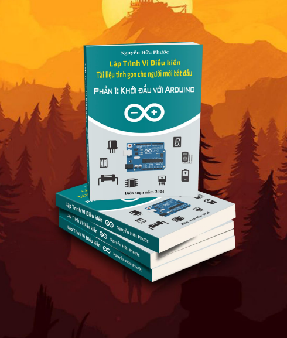
Arduino programming guide for beginners. -> Click the button to download for free.Tài liệu lập trình arduino cho người mới bắt đầu. -> Bấm nút để tải xuống miễn phí
Open LinkMở liên kết -

Arduino library for extracting 28 audio features including MFCC, frequency, and centro from an I2S microphone (such as IMP441, INMP441) on an ESP32.Thư viện Arduino để trích xuất 28 đặc trưng âm thanh gồm MFCC, tần số, Centro từ micro I2S (như IMP441, INMP441) trên ESP32
Open LinkMở liên kết -
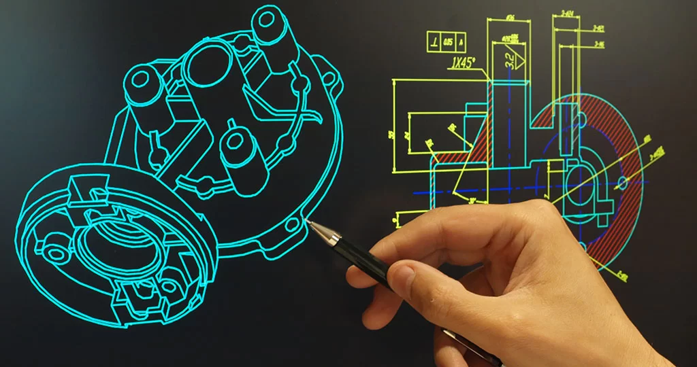
Instructions for installing the WINCAM CNC program for the CAD-CAM-CNC course at Can Tho University.Hướng dẫn cài đặt chương trình WINCAM CNC cho môn học CAD-CAM-CNC của Đại học Cần Thơ
Open LinkMở liên kết -
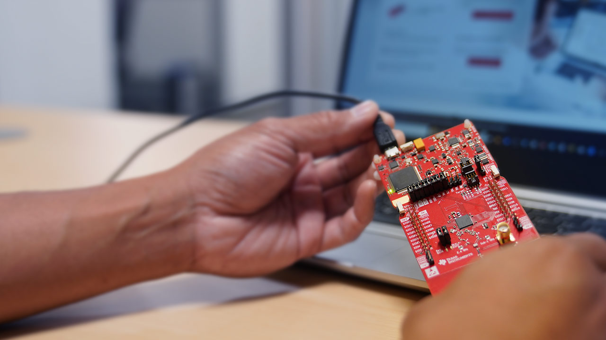
MSP430 Microcontroller Programming GuideTài liệu hướng dẫn lập trình vi điều khiển MSP430
Open LinkMở liên kết -
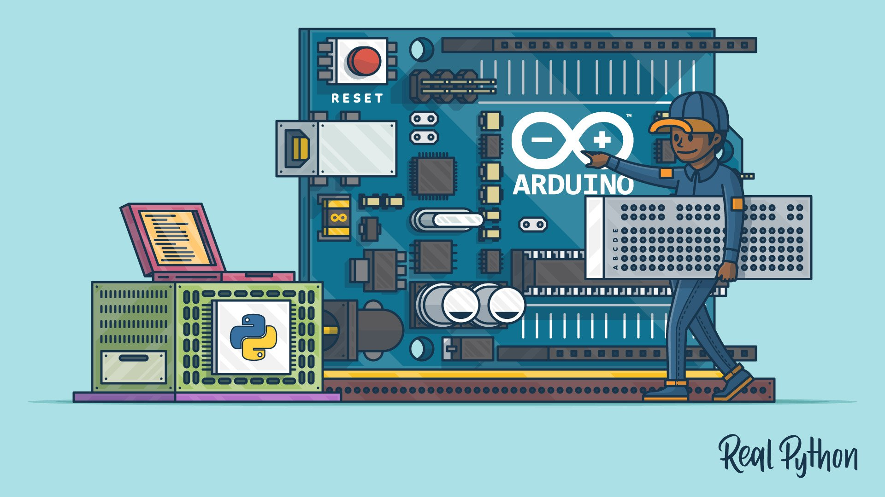
Machine learning model training tool for embedding on microcontrollersCông cụ huấn luyện mô hình machine learning để nhúng trên vi điều khiển
Open LinkMở liên kết -
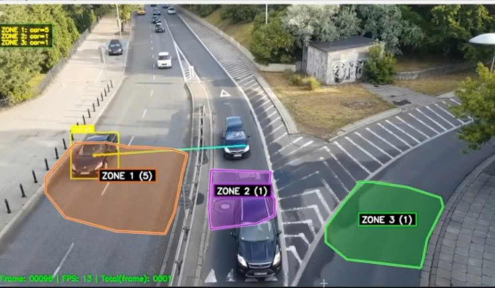
The YOLO V10 model identifies objects based on specific areas.Mô hình YOLO V10 nhận diện đối tượng theo khu vực cụ thể
Open LinkMở liên kết
Research PublicationsCông trình Nghiên cứu Khoa học
International PublicationsQuốc tế
-
2026 - Results in Engineering, Elsevier (Q1)
A handheld acoustic sensing device with mixed-domain learning for real-time, in-field durian maturity classification
Huu-Phuoc Nguyen, Nhut-Thanh Tran
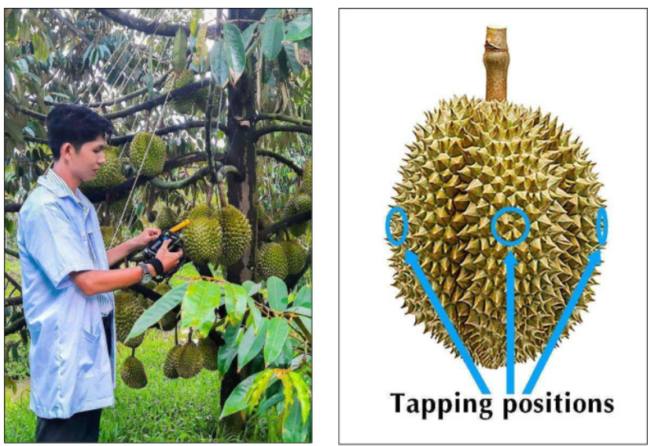
-
2026 - Smart Agricultural Technology, Elsevier (Q1)
A low-cost embedded machine learning-based acoustic sensing device for on-tree jackfruit maturity classification
Nhut-Thanh Tran, Huu-Phuoc Nguyen, Phuoc-Thien Ho, Trong-Nhan Phan, and Chanh-Nghiem Nguyen.
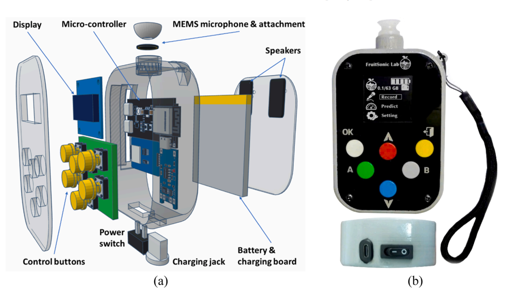
-
2025 - CCIS, Springer
Design of a solar-powered AIoT system for safety corridor violation detection in high-voltage power transmission networks
Huu-Phuoc Nguyen, Tan-Phat Tran, and Ngoc-Luat Pham.
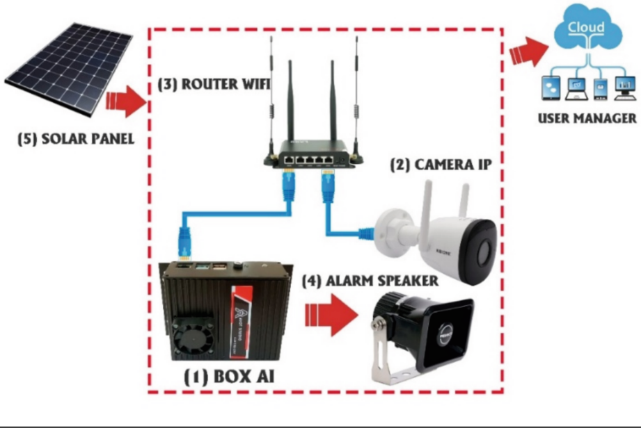
-
2024 - CCIS, Springer
Machine learning-based acoustic system for maturity classification of durian fruit before harvesting
Huu-Phuoc Nguyen, Viet-Lam Huynh, Thanh-Phong Duong, Chanh-Nghiem Nguyen, and Nhut-Thanh Tran.
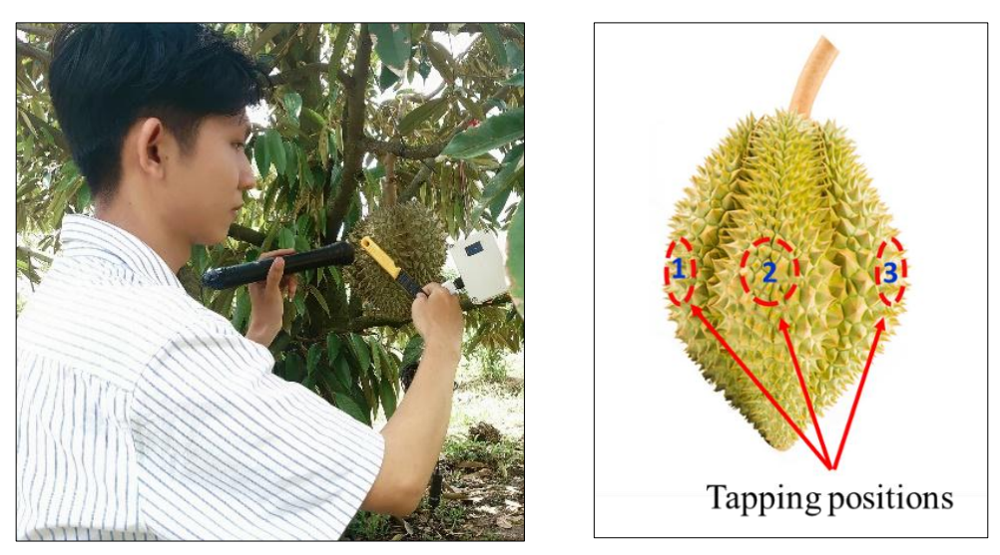
-
2023 - CCIS, Springer
Development of a new acoustic system for nondestructive internal quality assessment of fruits
Nhut-Thanh Tran, Cat-Tuong Nguyen, Huu-Phuoc Nguyen, Gia-Thuan Truong, Chanh-Nghiem Nguyen, and Masayuki Fukuzawa.
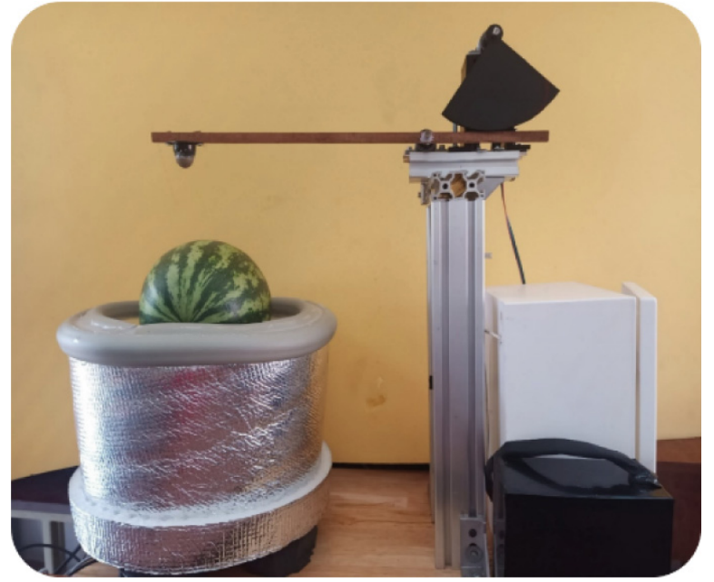
Domestic PublicationsTrong nước
-
2025 - CTU JISD (In English)
An acoustic-mechanical sensing system with multimodal machine learning technique for in-line quality grading of watermelons
Nhut-Thanh Tran, Huu-Phuoc Nguyen, Cat-Tuong Nguyen, Gia-Thuan Truong, Chanh-Nghiem Nguyen, and Masayuki Fukuzawa.
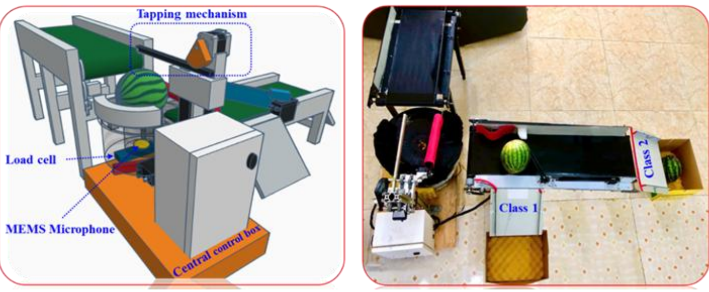
-
2024 - VCCA-2024 (In Vietnamese)
Classification of durian ripeness before harvest using low-cost acoustic solutions and machine learning models
Huu-Phuoc Nguyen, Thanh-Phong Nguyen, Viet-Lam Huynh, and Nhut-Thanh Tran. Proceedings of the 7th Int. Conf. on Control and Automation.

-
2024 - Journal of Science and Technology in Industrial Applications
Optimal design of safety corridor violation warning system based on laser sensor and LoRa communication
Huu-Phuoc Nguyen, Duy-Khang Nguyen, and Nhut-Thanh Tran.
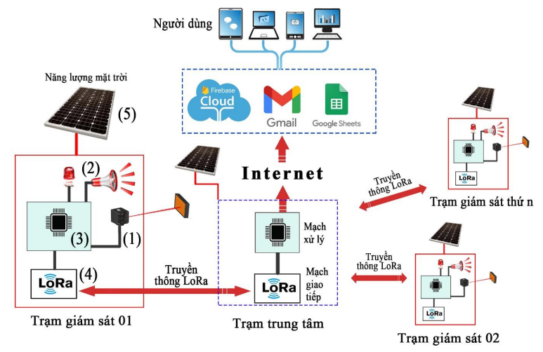
AchievementsGiải thưởng & Thành tựu
-
2024
Second Prize – University-Level Award
Student Scientific Research Conference, Can Tho University.
-
2022
Second Prize – National-Level Award
CIC Startup Idea Competition, VNU - Ho Chi Minh City.
-
2022
First Prize – Regional-Level Award
Student Scientific Research Competition, Mekong Delta Region.
-
2022
Excellence Certificate – Maker to Entrepreneur
Venture Demo Day, USAID BUILD-IT, Arizona State Univ & Dow VN.
-
2020
First Prize – City-Level Award
Science and Technology Innovation Competition for High School Students, Can Tho City.
-
2020
Second Prize – City-Level Award
Youth and Children’s Innovation Competition, Can Tho City.
Featured CertificatesChứng chỉ Nổi bật
-
Machine Learning with Python
View certificate ↗Xem chứng chỉ ↗ -
Python for Data Science
View certificate ↗Xem chứng chỉ ↗ -
Data Analysis with Python
View certificate ↗Xem chứng chỉ ↗ -
Gemini Certified Educator
View certificate ↗Xem chứng chỉ ↗ -
Gemini Certified University Student
View certificate ↗Xem chứng chỉ ↗